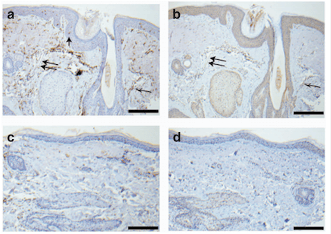
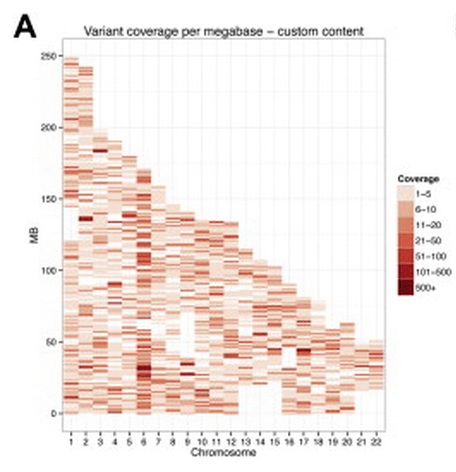
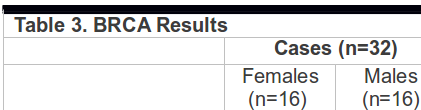
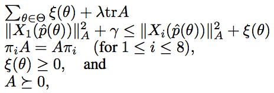
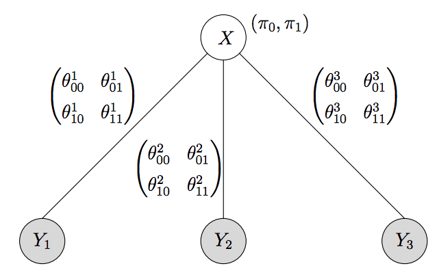

54
Genome-wide association analyses identify 44 risk variants and refine the genetic architecture of major depression
Nat Genet. 2018; 50, 668--681
Summary: 44 loci for major depression
Links: Nature Genetics bioRxiv
Abstract: Major depressive disorder (MDD) is a notably complex illness with a lifetime prevalence of 14%. 1 It is often chronic or recurrent and is thus accompanied by considerable morbidity, excess mortality, substantial costs, and heightened risk of suicide. 2-7 MDD is a major cause of disability worldwide. 8 We conducted a genome-wide association (GWA) meta-analysis in 130,664 MDD cases and 330,470 controls, and identified 44 independent loci that met criteria for statistical significance. We present extensive analyses of these results which provide new insights into the nature of MDD. The genetic findings were associated with clinical features of MDD, and implicated prefrontal and anterior cingulate cortex in the pathophysiology of MDD (regions exhibiting anatomical differences between MDD cases and controls). Genes that are targets of antidepressant medications were strongly enriched for MDD association signals (P=8.5x10-10), suggesting the relevance of these findings for improved pharmacotherapy of MDD. Sets of genes involved in gene splicing and in creating isoforms were also enriched for smaller MDD GWA P-values, and these gene sets have also been implicated in schizophrenia and autism. Genetic risk for MDD was correlated with that for many adult and childhood onset psychiatric disorders. Our analyses suggested important relations of genetic risk for MDD with educational attainment, body mass, and schizophrenia: the genetic basis of lower educational attainment and higher body mass were putatively causal for MDD whereas MDD and schizophrenia reflected a partly shared biological etiology. All humans carry lesser or greater numbers of genetic risk factors for MDD, and a continuous measure of risk underlies the observed clinical phenotype. MDD is not a distinct entity that neatly demarcates normalcy from pathology but rather a useful clinical construct associated with a range of adverse outcomes and the end result of a complex process of intertwined genetic and environmental effects. These findings help refine and define the fundamental basis of MDD.
53
Genome-wide association and HLA region fine-mapping studies identify susceptibility loci for multiple common infections
Nat Commun. 2017; 8; 599
Summary: Many links between the HLA and infectious disease
Links: Nature Communications bioRxiv
Abstract: We performed 23 genome-wide association studies for common infections and infection-associated procedures, including chickenpox, shingles, cold sores, mononucleosis, mumps, hepatitis B, plantar warts, positive tuberculosis test results, strep throat, scarlet fever, pneumonia, bacterial meningitis, yeast infections, urinary tract infections, tonsillectomy, childhood ear infections, myringotomy, measles, hepatitis A, rheumatic fever, common colds, rubella and chronic sinus infection, in over 200,000 individuals of European ancestry. For many infections, we detect genome-wide significant (P<5x10 -8 ) associations in genes with key roles in acquired and innate immunity and in regulation of embryonic development. Eleven missense mutations were identified including two (FUT2 and TBX1) that were implicated in multiple infections. We applied fine-mapping analysis to dissect associations in the human leukocyte antigen region, which suggested important roles of specific amino acid polymorphisms in the antigen-binding clefts. Our findings provide an important step toward dissecting the host genetic architecture of response to common infections.
52

A genetic investigation of sex bias in the prevalence of attention deficit hyperactivity disorder
bioRxiv (2017)
Summary: Similar polygenic ADHD burden across sex.
Links: bioRxiv
Abstract: Attention-deficit/hyperactivity disorder (ADHD) shows substantial heritability and is 2-7 times more common in males than females. We examined two putative genetic mechanisms underlying this sex bias: sex-specific heterogeneity and higher burden of risk in female cases. We analyzed genome-wide common variants from the Psychiatric Genomics Consortium and iPSYCH Project (20,183 cases, 35,191 controls) and Swedish population-registry data (N=77,905 cases, N=1,874,637 population controls). We find strong genetic correlation for ADHD across sex and no mean difference in polygenic burden across sex. In contrast, siblings of female probands are at an increased risk of ADHD, compared to siblings of male probands. The results also suggest that females with ADHD are at especially high risk of comorbid developmental conditions. Overall, this study supports a greater familial burden of risk in females with ADHD and some clinical and etiological heterogeneity. However, autosomal common variants largely do not explain the sex bias in ADHD prevalence.
51
Discovery Of The First Genome-Wide Significant Risk Loci For ADHD
bioRxiv (2017)
Summary: 12 loci for ADHD.
Links: bioRxiv
Abstract: Attention-Deficit/Hyperactivity Disorder (ADHD) is a highly heritable childhood behavioral disorder affecting 5% of school-age children and 2.5% of adults. Common genetic variants contribute substantially to ADHD susceptibility, but no individual variants have been robustly associated with ADHD. We report a genome-wide association meta-analysis of 20,183 ADHD cases and 35,191 controls that identifies variants surpassing genome-wide significance in 12 independent loci, revealing new and important information on the underlying biology of ADHD. Associations are enriched in evolutionarily constrained genomic regions and loss-of-function intolerant genes, as well as around brain-expressed regulatory marks. These findings, based on clinical interviews and/or medical records are supported by additional analyses of a self-reported ADHD sample and a study of quantitative measures of ADHD symptoms in the population. Meta-analyzing these data with our primary scan yielded a total of 16 genome-wide significant loci. The results support the hypothesis that clinical diagnosis of ADHD is an extreme expression of one or more continuous heritable traits.
50
Large scale meta-analysis characterizes genetic architecture for common psoriasis associated variants
Nat Commun. 2017; 8: 15382
Summary: 16 new associations with psoriasis
Links: PMC
Abstract: Psoriasis is a complex disease of skin with a prevalence of about 2%. We conducted the largest meta-analysis of genome-wide association studies (GWAS) for psoriasis to date, including data from eight different Caucasian cohorts, with a combined effective sample size >39,000 individuals. We identified 16 additional psoriasis susceptibility loci achieving genome-wide significance, increasing the number of identified loci to 63 for European-origin individuals. Functional analysis highlighted the roles of interferon signalling and the NF-kB cascade, and we showed that the psoriasis signals are enriched in regulatory elements from different T cells (CD8+ T-cells and CD4+ T-cells including TH0, TH1 and TH17). The identified loci explain ~28% of the genetic heritability and generate a discriminatory genetic risk score (AUC=0.76 in our sample) that is significantly correlated with age at onset (p=2e−89). This study provides a comprehensive layout for the genetic architecture of common variants for psoriasis.
49

Genome-wide analysis identifies 12 loci influencing human reproductive behavior
Nature Genetics 48, 1462–1472 (2016)
Summary: GWAS of age at first birth / number of children.
Links: Nature Genetics
Abstract: The genetic architecture of human reproductive behavior—age at first birth (AFB) and number of children ever born (NEB)—has a strong relationship with fitness, human development, infertility and risk of neuropsychiatric disorders. However, very few genetic loci have been identified, and the underlying mechanisms of AFB and NEB are poorly understood. We report a large genome-wide association study of both sexes including 251,151 individuals for AFB and 343,072 individuals for NEB. We identified 12 independent loci that are significantly associated with AFB and/or NEB in a SNP-based genome-wide association study and 4 additional loci associated in a gene-based effort. These loci harbor genes that are likely to have a role, either directly or by affecting non-local gene expression, in human reproduction and infertility, thereby increasing understanding of these complex traits.
48

Germline variants predispose to both JAK2 V617F clonal hematopoiesis and myeloproliferative neoplasms
Blood (2016) doi:10.1182/blood-2015-06-652941
Summary: Germline variants predisposing to myeloproliferative neoplasms and to JAK2 V617F clonal hematopoiesis.
Links: Blood
Abstract: We conducted a genome-wide association study to identify novel predisposition alleles associated with Philadelphia chromosome-negative myeloproliferative neoplasms (MPNs) as well as JAK2 V617F clonal hematopoiesis in the general population. We recruited a web-based cohort of 726 individuals with polycythemia vera, essential thrombocythemia, and myelofibrosis and 252,637 population controls unselected for hematologic phenotypes. Using a SNP array platform with custom probes for the JAK2 V617F mutation (V617F), we identified 497 individuals (0.2%) among the population controls who were V617F carriers. We performed a combined GWAS of the MPN cases plus V617F carriers in the control population (n=1223) versus the remaining controls who were non-carriers for V617F (n=252,140). For these MPN cases plus V617F carriers, we replicated the germline JAK2 46/1 haplotype (rs59384377: odds ratio (OR)=2.4, P=6.6e−89), previously associated with V617F-positive MPN. We also identified genome-wide significant associations in the TERT gene (rs7705526: OR=1.8, P=1.1e−32), in SH2B3 (rs7310615: OR=1.4, P=3.1e−14), and upstream of TET2 (rs1548483: OR=2.0, P=2.0e−9). These associations were confirmed in a separate replication cohort of 446 V617F carriers versus 169,021 non-carriers. In a joint analysis of the combined GWAS and replication results, we identified additional genome-wide significant predisposition alleles associated with CHEK2, ATM, PINT, and GFI1B. All SNP odds ratios were similar for MPN patients and for controls who were V617F carriers. These data indicate that the same germline variants not only endow individuals with a predisposition to MPN, but also to JAK2 V617F clonal hematopoiesis, a more common phenomenon that may foreshadow the development of an overt neoplasm.
47

Meta-analysis of 375,000 individuals identifies 38 susceptibility loci for migraine
Nature Genetics (2016) doi:10.1038/ng.3598
Summary: A huge GWAS of migraines.
Links: Nature Genetics
Abstract: Migraine is a debilitating neurological disorder affecting around one in seven people worldwide, but its molecular mechanisms remain poorly understood. There is some debate about whether migraine is a disease of vascular dysfunction or a result of neuronal dysfunction with secondary vascular changes. Genome-wide association (GWA) studies have thus far identified 13 independent loci associated with migraine. To identify new susceptibility loci, we carried out a genetic study of migraine on 59,674 affected subjects and 316,078 controls from 22 GWA studies. We identified 44 independent single-nucleotide polymorphisms (SNPs) significantly associated with migraine risk (P < 5 x 10−8) that mapped to 38 distinct genomic loci, including 28 loci not previously reported and a locus that to our knowledge is the first to be identified on chromosome X. In subsequent computational analyses, the identified loci showed enrichment for genes expressed in vascular and smooth muscle tissues, consistent with a predominant theory of migraine that highlights vascular etiologies.
46

GWAS of 89,283 individuals identifies genetic variants associated with self-reporting of being a morning person
Nature Communications 7, Article number: 10448, Feb 2016.
Summary: On the genetics of circadian rhythms
Links: Nature Communications
Press: The Verge
Abstract: Circadian rhythms are a nearly universal feature of living organisms and affect almost every biological process. Our innate preference for mornings or evenings is determined by the phase of our circadian rhythms. We conduct a genome-wide association analysis of self-reported morningness, followed by analyses of biological pathways and related phenotypes. We identify 15 significantly associated loci, including seven near established circadian genes (rs12736689 near RGS16, P=7.0 x 10−18; rs9479402 near VIP, P=3.9 x 10−11; rs55694368 near PER2, P=2.6 x 10−9; rs35833281 near HCRTR2, P=3.7 x 10−9; rs11545787 near RASD1, P=1.4 x 10−8; rs11121022 near PER3, P=2.0 x 10−8; rs9565309 near FBXL3, P=3.5 x 10−8. Circadian and phototransduction pathways are enriched in our results. Morningness is associated with insomnia and other sleep phenotypes; and is associated with body mass index and depression but we did not find evidence for a causal relationship in our Mendelian randomization analysis. Our findings reinforce current understanding of circadian biology and will guide future studies.
45

Who's Benefiting from MOOCs, and Why
Harvard Business Review, September 22, 2015.
Summary: Among learners who complete courses, MOOCs do have a real impact.
Links: Harvard Business Review
Press: Financial Times USA Today Inc. Chronicle of Higher Education
44

Virtual research visits and direct-to-consumer genetic testing in Parkinson’s disease
Digital Health, Jun 2015.
Summary: In depth, virtual visits of Parkinson's disease patients.
Links: Digital Health
43
Assessment of the Genetic Basis of Rosacea by Genome-Wide Association Study
Journal of Investigative Dermatology, March 2015.
Summary: HLA associations with rosacea
Links: JID
Abstract: Rosacea is a common, chronic skin disease that is currently incurable. Although environmental factors influence rosacea, the genetic basis of rosacea is not established. In this genome-wide association study, a discovery group of 22,952 individuals (2,618 rosacea cases and 20,334 controls) was analyzed, leading to identification of two significant single-nucleotide polymorphisms (SNPs) associated with rosacea, one of which replicated in a new group of 29,481 individuals (3,205 rosacea cases and 26,262 controls). The confirmed SNP, rs763035 (P=8e−11 discovery group; P=0.00031 replication group), is intergenic between HLA-DRA and BTNL2. Exploratory immunohistochemical analysis of HLA-DRA and BTNL2 expression in papulopustular rosacea lesions from six individuals, including one with the rs763035 variant, revealed staining in the perifollicular inflammatory infiltrate of rosacea for both proteins. In addition, three HLA alleles, all MHC class II proteins, were significantly associated with rosacea in the discovery group and confirmed in the replication group: HLA-DRB1*03:01 (P=1e−8 discovery group; P=4.4e−6 replication group), HLA-DQB1*02:01 (P=1.3e−8 discovery group; P=7.2e−6 replication group), and HLA-DQA1*05:01 (P=1.4e−8 discovery group; P=7.6e−6 replication group). Collectively, the gene variants identified in this study support the concept of a genetic component for rosacea, and provide candidate targets for future studies to better understand and treat rosacea.
42

Genetic variants associated with motion sickness point to roles for inner ear development, neurological processes, and glucose homeostasis
Human Molecular Genetics, 2015.
Summary: The first 35 variants associated with motion sickness.
Abstract: Roughly one in three individuals is highly susceptible to motion sickness and yet the underlying causes of this condition are not well understood. Despite high heritability, no associated genetic factors have been discovered to date. Here, we conducted the first genome-wide association study on motion sickness in 80,494 individuals from the 23andMe database who were surveyed about car sickness. Thirty-five single-nucleotide polymorphisms (SNPs) were associated with motion sickness at a genome-wide-significant level (p< 5e-8). Many of these SNPs are near genes involved in balance, and eye, ear, and cranial development (e.g., PVRL3, TSHZ1, MUTED, HOXB3, HOXD3). Other SNPs may affect motion sickness through nearby genes with roles in the nervous system, glucose homeostasis, or hypoxia. We show that several of these SNPs display sex-specific effects, with as much as three times stronger effects in women. We searched for comorbid phenotypes with motion sickness, confirming associations with known comorbidities including migraines, postoperative nausea and vomiting (PONV), vertigo, and morning sickness, and observing new associations with altitude sickness and many gastrointestinal conditions. We also show that two of these related phenotypes (PONV and migraines) share underlying genetic factors with motion sickness. These results point to the importance of the nervous system in motion sickness and suggest a role for glucose levels in motion-induced nausea and vomiting, a finding that may provide insight into other nausea-related phenotypes such as PONV. They also highlight personal characteristics (e.g., being a poor sleeper) that correlate with motion sickness, findings that could help identify risk factors or treatments.
41
Escape from crossover interference increases with maternal age
Nature Communications, 6, Feb 2015.
Summary: Analysis of recombination rate and hotspot usage with respect to age.
Links: Nature Communications arxiv
Abstract: Recombination plays a fundamental role in meiosis, ensuring the proper segregation of chromosomes and contributing to genetic diversity by generating novel combinations of alleles. Using data derived from direct-to-consumer genetic testing, we investigated patterns of recombination in over 4,200 families. Our analysis revealed a number of sex differences in the distribution of recombination. We find the fraction of male events occurring within hotspots to be 4.6% higher than for females. We confirm that the recombination rate increases with maternal age, while hotspot usage decreases, with no such effects observed in males. Finally, we show that the placement of female recombination events becomes increasingly deregulated with maternal age, with an increasing fraction of events appearing to escape crossover interference.
40

Replicability and Robustness of Genome-Wide-Association Studies for Behavioral Traits
Psychological Science, Nov 2014, vol. 25, no. 11, 1975-1986.
Summary: Replication of educational attainment associations
Links: Psych Sci
Abstract: A recent genome-wide-association study of educational attainment identified three single-nucleotide polymorphisms (SNPs) whose associations, despite their small effect sizes (each R^2 = 0.02%), reached genome-wide significance (p < 5 x 10−8) in a large discovery sample and were replicated in an independent sample (p < .05). The study also reported associations between educational attainment and indices of SNPs called 'polygenic scores.' In three studies, we evaluated the robustness of these findings. Study 1 showed that the associations with all three SNPs were replicated in another large (N = 34,428) independent sample. We also found that the scores remained predictive (R^2 = 2%) in regressions with stringent controls for stratification (Study 2) and in new within-family analyses (Study 3). Our results show that large and therefore well-powered genome-wide-association studies can identify replicable genetic associations with behavioral traits. The small effect sizes of individual SNPs are likely to be a major contributing factor explaining the striking contrast between our results and the disappointing replication record of most candidate-gene studies.
39
NeuroX, a Fast and Efficient Genotyping Platform for Investigation of Neurodegenerative Diseases
Neurobiology of Aging, 4 Aug 2014.
Summary: A cheap genotyping chip for neurodegenerative disease research.
Links: DOI
Abstract: Our objective was to design a genotyping platform that would allow rapid genetic characterization of samples in the context of genetic mutations and risk factors associated with common neurodegenerative diseases. The platform needed to be relatively affordable, rapid to deploy, and use a common and accessible technology. Central to this project, we wanted to make the content of the platform open to any investigator without restriction. In designing this array we prioritized a number of types of genetic variability for inclusion, such as known risk alleles, disease-causing mutations, putative risk alleles, and other functionally important variants. The array was primarily designed to allow rapid screening of samples for disease-causing mutations and large population studies of risk factors. Notably, an explicit aim was to make this array widely available to facilitate data sharing across and within diseases. The resulting array, NeuroX, is a remarkably cost and time effective solution for high-quality genotyping. NeuroX comprises a backbone of standard Illumina exome content of approximately 240,000 variants, and over 24,000 custom content variants focusing on neurologic diseases. Data are generated at approximately $50–$60 per sample using a 12-sample format chip and regular Infinium infrastructure; thus, genotyping is rapid and accessible to many investigators. Here, we describe the design of NeuroX, discuss the utility of NeuroX in the analyses of rare and common risk variants, and present quality control metrics and a brief primer for the analysis of NeuroX derived data.
38
Large-scale meta-analysis of genome-wide association data identifies six new risk loci for Parkinson's disease
Nature Genetics (2014) doi:10.1038/ng.3043
Summary: Six new loci for Parkinson's disease in the largest meta-analysis to date
Links: Nature Genetics
37

Reducing pervasive false positive identical-by-descent segments detected by large-scale pedigree analysis
Mol Biol Evol, 30 April 2014.
Summary: Improving the accuracy of germline on short IBD segments
Abstract: Analysis of genomic segments shared identical-by-descent (IBD) between individuals is fundamental to many genetic applications, from demographic inference to estimating the heritability of diseases, but IBD detection accuracy in non-simulated data is largely unknown. In principle, it can be evaluated using known pedigrees, as IBD segments are by definition inherited without recombination down a family tree. We extracted 25,432 genotyped European individuals containing 2,952 father-mother-child trios from the 23andMe, Inc. dataset. We then used GERMLINE, a widely used IBD detection method, to detect IBD segments within this cohort. Exploiting known familial relationships, we identified a false positive rate over 67% for 2–4 centiMorgan (cM) segments, in sharp contrast with accuracies reported in simulated data at these sizes. Nearly all false positives arose from the allowance of haplotype switch errors when detecting IBD, a necessity for retrieving long (> 6 cM) segments in the presence of imperfect phasing. We introduce HaploScore, a novel, computationally efficient metric that scores IBD segments proportional to the number of switch errors they contain. Applying HaploScore filtering to the IBD data at a precision of 0.8 produced a 13-fold increase in recall when compared to length-based filtering. We replicate the false IBD findings and demonstrate the generalizability of HaploScore to alternative data sources using an independent cohort of 555 European individuals from the 1000 Genomes project. HaploScore can improve the accuracy of segments reported by any IBD detection method, provided that estimates of the genotyping error rate and switch error rate are available.
36

Genome-wide association analysis identifies 11 risk variants associated with the asthma with hay fever phenotype
Journal of Allergy and Clinical Immunology, 31 December 2013
Summary: Meta-analysis of hay fever with asthma
Links: JACI ScienceDirect
35

Gradiant Boosting as a SNP filter: an evaluation using simulated and hair morphology data
Journal of Data Mining in Genomics & Proteomics, 2013, 4:4
Summary: Gradiant boosting applied to GWAS data
Links: pdf
34

A genome-wide association meta-analysis of self-reported allergy identifies shared and allergy-specific susceptibility loci
Nat Genet, 2013 June 30.
Summary: Sixteen associations with allergies, eight of them shared with asthma
Links: Pubmed Nature Genetics
Abstract: Allergic disease is very common and carries substantial public-health burdens. We conducted a meta-analysis of genome-wide associations with self-reported cat, dust-mite and pollen allergies in 53,862 individuals. We used generalized estimating equations to model shared and allergy-specific genetic effects. We identified 16 shared susceptibility loci with association P < 5e-8, including 8 loci previously associated with asthma, as well as 4p14 near TLR1, TLR6 and TLR10 (rs2101521, P = 5.3e-21); 6p21.33 near HLA-C and MICA (rs9266772, P = 3.2e-12); 5p13.1 near PTGER4 (rs7720838, P = 8.2e-11); 2q33.1 in PLCL1 (rs10497813, P = 6.1e-10), 3q28 in LPP (rs9860547, P = 1.2e-9); 20q13.2 in NFATC2 (rs6021270, P = 6.9e-9), 4q27 in ADAD1 (rs17388568, P = 3.9e-8); and 14q21.1 near FOXA1 and TTC6 (rs1998359, P = 4.8e-8). We identified one locus with substantial evidence of differences in effects across allergies at 6p21.32 in the class II human leukocyte antigen (HLA) region (rs17533090, P = 1.7e-12), which was strongly associated with cat allergy. Our study sheds new light on the shared etiology of immune and autoimmune disease.
33
Serum iron levels and the risk of Parkinson's disease: a Mendelian randomization study
PLOS Med. 10(6): e1001462.
Summary: Mendelian randomization study shows that higher iron levels are protective for Parkinson's disease
Abstract: Although levels of iron are known to be increased in the brains of patients with Parkinson disease (PD), epidemiological evidence on a possible effect of iron blood levels on PD risk is inconclusive, with effects reported in opposite directions. Epidemiological studies suffer from problems of confounding and reverse causation, and mendelian randomization (MR) represents an alternative approach to provide unconfounded estimates of the effects of biomarkers on disease. We performed a MR study where genes known to modify iron levels were used as instruments to estimate the effect of iron on PD risk, based on estimates of the genetic effects on both iron and PD obtained from the largest sample meta-analyzed to date. We used as instrumental variables three genetic variants influencing iron levels, HFE rs1800562, HFE rs1799945, and TMPRSS6 rs855791. Estimates of their effect on serum iron were based on a recent genome-wide meta-analysis of 21,567 individuals, while estimates of their effect on PD risk were obtained through meta-analysis of genome-wide and candidate gene studies with 20,809 PD cases and 88,892 controls. Separate MR estimates of the effect of iron on PD were obtained for each variant and pooled by meta-analysis. We investigated heterogeneity across the three estimates as an indication of possible pleiotropy and found no evidence of it. The combined MR estimate showed a statistically significant protective effect of iron, with a relative risk reduction for PD of 3% (95% CI 1%-6%; p = 0.001) per 10 ug/dl increase in serum iron. Our study suggests that increased iron levels are causally associated with a decreased risk of developing PD. Further studies are needed to understand the pathophysiological mechanism of action of serum iron on PD risk before recommendations can be made.
32
31

Genome-wide analysis points to roles for extracellular matrix remodeling, the visual cycle, and neuronal development in myopia
PLoS Genet., 9(2): e1003299.
Summary: Twenty-two associations for myopia age of onset, many of which are near genes with interesting roles in vision development.
Abstract: Myopia, or nearsightedness, is the most common eye disorder, resulting primarily from excess elongation of the eye. The etiology of myopia, although known to be complex, is poorly understood. Here we report the largest ever genome-wide association study (45,771 participants) on myopia in Europeans. We performed a survival analysis on age of myopia onset and identified 22 significant associations (p<5e-8), two of which are replications of earlier associations with refractive error. Ten of the 20 novel associations identified replicate in a separate cohort of 8,323 participants who reported if they had developed myopia before age 10. These 22 associations in total explain 2.9% of the variance in myopia age of onset and point toward a number of different mechanisms behind the development of myopia. One association is in the gene PRSS56, which has previously been linked to abnormally small eyes; one is in a gene that forms part of the extracellular matrix (LAMA2); two are in or near genes involved in the regeneration of 11-cis-retinal (RGR and RDH5); two are near genes known to be involved in the growth and guidance of retinal ganglion cells (ZIC2, SFRP1); and five are in or near genes involved in neuronal signaling or development. These novel findings point toward multiple genetic factors involved in the development of myopia and suggest that complex interactions between extracellular matrix remodeling, neuronal development, and visual signals from the retina may underlie the development of myopia in humans.
30
Dealing with the unexpected: Consumer responses to direct-access BRCA mutation testing
PeerJ, 1:e8.
Summary: How do people respond to learning their BRCA status via 23andMe?
Abstract: Background: Inherited BRCA gene mutations convey a high risk for breast and ovarian cancer, but current guidelines limit BRCA mutation testing to women with early-onset cancer and relatives of mutation-positive cases. Benefits and risks of providing this information directly to consumers are unknown. Methods: To assess and quantify emotional and behavioral reactions of consumers to their 23andMe Personal Genome Service report of three BRCA mutations that are common in Ashkenazi Jews, we invited all 136 BRCA1 and BRCA2 mutation-positive individuals in the 23andMe customer database who had chosen to view their BRCA reports to participate in this IRB-approved study. We also invited 160 mutation-negative customers who were matched for age, sex and ancestry. Semi-structured phone interviews were completed for 32 mutation carriers, 16 women and 16 men, and 31 non-carriers. Questions addressed personal and family history of cancer, decision and timing of viewing the BRCA report, recollection of the result, emotional responses, perception of personal cancer risk, information sharing, and actions taken or planned. Results: Eleven women and 14 men had received the unexpected result that they are carriers of a BRCA1 185delAG or 5382insC, or BRCA2 6174delT mutation. None of them reported extreme anxiety and four experienced moderate anxiety that was transitory. Remarkably, five women and six men described their response as neutral. Most carrier women sought medical advice and four underwent risk-reducing procedures after confirmatory mutation testing. Male carriers realized that their test results implied genetic risk for female relatives, and several of them felt considerably burdened by this fact. Sharing mutation information with family members led to screening of at least 30 relatives and identification of 13 additional carriers. Non-carriers did not report inappropriate actions, such as foregoing cancer screening. All but one of the 32 mutation-positive participants appreciated learning their BRCA mutation status. Conclusions: Direct access to BRCA mutation tests, considered a model for high-risk actionable genetic tests of proven clinical utility, provided clear benefits to participants. The unexpected information demonstrated a cascade effect as relatives of newly identified carriers also sought testing and more mutation carriers were identified. Given the absence of evidence for serious emotional distress or inappropriate actions, broader screening of Ashkenazi Jewish women for these three BRCA mutations should be considered.
29

Androgenetic alopecia: identification of four new genetic risk loci and evidence for the contribution of WNT-signaling to its etiology
J Invest Dermatol, 2013 Jan 28.
Summary: Four new loci for male-pattern baldness.
Abstract: The pathogenesis of androgenetic alopecia (AGA, male-pattern baldness) is driven by androgens, and genetic predisposition is the major prerequisite. Candidate gene and genome-wide association studies have reported that single nucleotide polymorphisms (SNPs) at eight different genomic loci are associated with AGA-development. However a significant fraction of the overall heritable risk still awaits identification. Furthermore, understanding of the pathophysiology of AGA is incomplete, and each newly associated locus may provide novel insights into contributing biological pathways. The aim of this study was to identify unknown AGA risk loci by replicating SNPs at the twelve genomic loci that showed suggestive association (5 x 10(-8)< P <10(-5)) with AGA in a recent meta-analysis. We analyzed a replication-set comprising 2,759 cases and 2,661 controls of European descent to confirm the association with AGA at these loci. Combined analysis of the replication and the meta-analysis data identified four genome-wide significant risk loci for AGA on chromosomes 2q35, 3q25.1, 5q33.3, and 12p12.1. The strongest association signal was obtained for rs7349332 (P=3.55 x 10(-15)) on chr2q35, which is located intronically in WNT10A. Expression studies in human hair follicle tissue suggest that WNT10A plays a functional role in AGA-etiology. Thus, our study provides genetic evidence supporting an involvement of WNT-signaling in AGA-development
28

A genetic variant near olfactory receptor genes influences cilantro preference
Flavour, 1:22, Dec 2012.
Summary: We uncover a cluster of olfactory receptor genes that play a role in cilantro dislike.
Press: Nature NPR Gizmodo BoingBoing MetaFilter Business Insider Huffington Post
Blogs: The Spittoon Haldane's Sieve
Abstract: The leaves of the Coriandrum sativum plant, known as cilantro or coriander, are widely used in many cuisines around the world. However, far from being a benign culinary herb, cilantro can be polarizing---many people love it while others claim that it tastes or smells foul, often like soap or dirt. This soapy or pungent aroma is largely attributed to several aldehydes present in cilantro. Cilantro preference is suspected to have a genetic component, yet to date nothing is known about specific mechanisms. Here we present the results of a genome-wide association study among 14,604 participants of European ancestry who reported whether cilantro tasted soapy, with replication in a distinct set of 11,851 participants who declared whether they liked cilantro. We find a single nucleotide polymorphism (SNP) significantly associated with soapy-taste detection that is confirmed in the cilantro preference group. This SNP, rs72921001, (p=6.4e-9, odds ratio 0.81 per A allele) lies within a cluster of olfactory receptor genes on chromosome 11. Among these olfactory receptor genes is OR6A2, which has a high binding specificity for several of the aldehydes that give cilantro its characteristic odor. We also estimate the heritability of cilantro soapy-taste detection in our cohort, showing that the heritability tagged by common SNPs is low, about 0.087. These results confirm that there is a genetic component to cilantro taste perception and suggest that cilantro dislike may stem from genetic variants in olfactory receptors. We propose that OR6A2 may be the olfactory receptor that contributes to the detection of a soapy smell from cilantro in European populations.
27
Comparison of Family History and SNPs for Predicting Risk of Complex Disease
PLoS Genet., 8(10): e1002973, October 2012.
Summary: We develop models based on quantitative genetic theory to analyze and compare family history and SNP-based risk prediction models.
Press: SF Chronicle
Blogs: The turning of the key The Spitoon
Abstract: The clinical utility of family history and genetic tests is generally well understood for simple Mendelian disorders and rare subforms of complex diseases that are directly attributable to highly penetrant genetic variants. However, little is presently known regarding the performance of these methods in situations where disease susceptibility depends on the cumulative contribution of multiple genetic factors of moderate or low penetrance. Using quantitative genetic theory, we develop a model for studying the predictive ability of family history and single nucleotide polymorphism (SNP)-based methods for assessing risk of polygenic disorders. We show that family history is most useful for highly common, heritable conditions (e.g., coronary artery disease), where it explains roughly 20%-30% of disease heritability, on par with the most successful SNP models based on associations discovered to date. In contrast, we find that for diseases of moderate or low frequency (e.g., Crohn disease) family history accounts for less than 4% of disease heritability, substantially lagging behind SNPs in almost all cases. These results indicate that, for a broad range of diseases, already identified SNP associations may be better predictors of risk than their family history-based counterparts, despite the large fraction of missing heritability that remains to be explained. Our model illustrates the difficulty of using either family history or SNPs for standalone disease prediction. On the other hand, we show that, unlike family history, SNP-based tests can reveal extreme likelihood ratios for a relatively large percentage of individuals, thus providing potentially valuable adjunctive evidence in a differential diagnosis.
26
Genetic variants associated with breast size also influence breast cancer risk
BMC Med Genet, 13(1):53, Jun 2012
Summary: We discover a number of SNPs associated with breast size. Surprisingly, several are also involved in breast cancer.
Press: Jezebel Huffington Post The Telegraph
Blogs: The Spitoon
Abstract: While some factors of breast morphology, such as density, are directly implicated in breast cancer, the relationship between breast size and cancer is less clear. Breast size is moderately heritable, yet the genetic variants leading to differences in breast size have not been identified. To investigate the genetic factors underlying breast size, we conducted a genome-wide association study (GWAS) of self-reported bra cup size, controlling for age, genetic ancestry, breast surgeries, pregnancy history and bra band size, in a cohort of 16,175 women of European ancestry. We identified seven single-nucleotide polymorphisms (SNPs) significantly associated with breast size (p<5e-8): rs7816345 near ZNF703, rs4849887 and (independently) rs17625845 flanking INHBB, rs12173570 near ESR1, rs7089814 in ZNF365, rs12371778 near PTHLH, and rs62314947 near AREG. Two of these seven SNPs are in linkage disequilibrium (LD) with SNPs associated with breast cancer (those near ESR1 and PTHLH), and a third (ZNF365) is near, but not in LD with, a breast cancer SNP. The other three loci (ZNF703, INHBB, and AREG) have strong links to breast cancer, estrogen regulation, and breast development. These results provide insight into the genetic factors underlying normal breast development and show that some of these factors are shared with breast cancer. While these results do not directly support any possible epidemiological relationships between breast size and cancer, this study may contribute to a better understanding of the subtle interactions between breast morphology and breast cancer risk.
25

Six novel susceptibility Loci for early-onset androgenetic alopecia and their unexpected association with common diseases
PLoS Genet., 8(5):e1002746, May 2012.
Summary: A large meta-analysis of male-pattern baldness uncovers unexpected connections with Parkinson's disease
Blogs: The Spitoon
Abstract: Androgenetic alopecia (AGA) is a highly heritable condition and the most common form of hair loss in humans. Susceptibility loci have been described on the X chromosome and chromosome 20, but these loci explain a minority of its heritable variance. We conducted a large-scale meta-analysis of seven genome-wide association studies for early-onset AGA in 12,806 individuals of European ancestry. While replicating the two AGA loci on the X chromosome and chromosome 20, six novel susceptibility loci reached genome-wide significance (p=2.62e-9 -- 1.01e-12). Unexpectedly, we identified a risk allele at 17q21.31 that was recently associated with Parkinson's disease (PD) at a genome-wide significant level. We then tested the association between early-onset AGA and the risk of PD in a cross-sectional analysis of 568 PD cases and 7,664 controls. Early-onset AGA cases had significantly increased odds of subsequent PD (OR=1.28, 95% confidence interval: 1.06-1.55, p=8.9e-3). Further, the AGA susceptibility alleles at the 17q21.31 locus are on the H1 haplotype, which is under negative selection in Europeans and has been linked to decreased fertility. Combining the risk alleles of six novel and two established susceptibility loci, we created a genotype risk score and tested its association with AGA in an additional sample. Individuals in the highest risk quartile of a genotype score had an approximately six-fold increased risk of early-onset AGA [odds ratio (OR)=5.78, p=1.4e-88]. Our results highlight unexpected associations between early-onset AGA, Parkinson's disease, and decreased fertility, providing important insights into the pathophysiology of these conditions.
24
Cryptic distant relatives are common in both isolated and cosmopolitan genetic samples
PLoS ONE, 7(4):e34267, 2012.
Summary: An analysis of the number of cryptic distant relatives among various populations.
Abstract: Although a few hundred single nucleotide polymorphisms (SNPs) suffice to infer close familial relationships, high density genome-wide SNP data make possible the inference of more distant relationships such as 2(nd) to 9(th) cousinships. In order to characterize the relationship between genetic similarity and degree of kinship given a timeframe of 100-300 years, we analyzed the sharing of DNA inferred to be identical by descent (IBD) in a subset of individuals from the 23andMe customer database (n=22,757) and from the Human Genome Diversity Panel (HGDP-CEPH, n=952). With data from 121 populations, we show that the average amount of DNA shared IBD in most ethnolinguistically-defined populations, for example Native American groups, Finns and Ashkenazi Jews, differs from continentally-defined populations by several orders of magnitude. Via extensive pedigree-based simulations, we determined bounds for predicted degrees of relationship given the amount of genomic IBD sharing in both endogamous and 'unrelated' population samples. Using these bounds as a guide, we detected tens of thousands of 2(nd) to 9(th) degree cousin pairs within a heterogenous set of 5,000 Europeans. The ubiquity of distant relatives, detected via IBD segments, in both ethnolinguistic populations and in large 'unrelated' populations samples has important implications for genetic genealogy, forensics and genotype/phenotype mapping studies.
23
Novel associations for hypothyroidism include known autoimmune risk loci
PLoS ONE, 7(4):e34442, 2012.
Summary: A GWAS for hypothyroidism implicates genes involved in both autoimmune disorders and thyroid function.
Abstract: Hypothyroidism is the most common thyroid disorder, affecting about 5% of the general population. Here we present the current largest genome-wide association study of hypothyroidism, in 3,736 cases and 35,546 controls. Hypothyroidism was assessed via web-based questionnaires. We identify five genome-wide significant associations, three of which are well known to be involved in a large spectrum of autoimmune diseases: rs6679677 near PTPN22, rs3184504 in SH2B3, and rs2517532 in the HLA class I region (p-values 2.8e-13, 2.6e-12, and 1.3e-8, respectively). We also report associations with rs4915077 near VAV3 (p-value 7.5e-10) and rs925489 near FOXE1 (p-value 2.4e-19). VAV3 is involved in immune function, and FOXE1 and PTPN22 have previously been associated with hypothyroidism. Although the HLA class I region and SH2B3 have previously been linked with a number of autoimmune diseases, this is the first report of their association with thyroid disease. The VAV3 association is also novel. We also show suggestive evidence of association for hypothyroidism with a SNP in the HLA class II region (independent of the other HLA association) as well as SNPs in CAPZB, PDE8B, and CTLA4. CAPZB and PDE8B have been linked to TSH levels and CTLA4 to a variety of autoimmune diseases. These results suggest heterogeneity in the genetic etiology of hypothyroidism, implicating genes involved in both autoimmune disorders and thyroid function. Using a genetic risk profile score based on the top association from each of the five genome-wide significant regions in our study, the relative risk between the highest and lowest deciles of genetic risk is 2.0.
22
Comprehensive research synopsis and systematic meta-analyses in Parkinson's disease genetics: The PDGene database
PLoS Genet., 8(3):e1002548, 2012.
Summary: A comprehensive collection and meta-analysis of all genetic research in Parkinson's disease.
Blogs: The Spitoon
Abstract: More than 800 published genetic association studies have implicated dozens of potential risk loci in Parkinson's disease (PD). To facilitate the interpretation of these findings, we have created a dedicated online resource, PDGene, that comprehensively collects and meta-analyzes all published studies in the field. A systematic literature screen of -27,000 articles yielded 828 eligible articles from which relevant data were extracted. In addition, individual-level data from three publicly available genome-wide association studies (GWAS) were obtained and subjected to genotype imputation and analysis. Overall, we performed meta-analyses on more than seven million polymorphisms originating either from GWAS datasets and/or from smaller scale PD association studies. Meta-analyses on 147 SNPs were supplemented by unpublished GWAS data from up to 16,452 PD cases and 48,810 controls. Eleven loci showed genome-wide significant (P < 5e-8) association with disease risk: BST1, CCDC62/HIP1R, DGKQ/GAK, GBA, LRRK2, MAPT, MCCC1/LAMP3, PARK16, SNCA, STK39, and SYT11/RAB25. In addition, we identified novel evidence for genome-wide significant association with a polymorphism in ITGA8 (rs7077361, OR 0.88, P=1.3e-8). All meta-analysis results are freely available on a dedicated online database (www.pdgene.org), which is cross-linked with a customized track on the UCSC Genome Browser. Our study provides an exhaustive and up-to-date summary of the status of PD genetics research that can be readily scaled to include the results of future large-scale genetics projects, including next-generation sequencing studies.
21

The temporal order of genetic and pathway alterations in tumorigenesis
PLoS ONE, 6(11):e27136, 2011.
Summary: Analysis of mutation accumulation in cancer using next-generation sequence data and conjunctive Bayesian networks.
Abstract: Cancer evolves through the accumulation of mutations, but the order in which mutations occur is poorly understood. Inference of a temporal ordering on the level of genes is challenging because clinically and histologically identical tumors often have few mutated genes in common. This heterogeneity may at least in part be due to mutations in different genes having similar phenotypic effects by acting in the same functional pathway. We estimate the constraints on the order in which alterations accumulate during cancer progression from cross-sectional mutation data using a probabilistic graphical model termed Hidden Conjunctive Bayesian Network (H-CBN). The possible orders are analyzed on the level of genes and, after mapping genes to functional pathways, also on the pathway level. We find stronger evidence for pathway order constraints than for gene order constraints, indicating that temporal ordering results from selective pressure acting at the pathway level. The accumulation of changes in core pathways differs among cancer types, yet a common feature is that progression appears to begin with mutations in genes that regulate apoptosis pathways and to conclude with mutations in genes involved in invasion pathways. H-CBN models provide a quantitative and intuitive model of tumorigenesis showing that the genetic events can be linked to the phenotypic progression on the level of pathways.
20
Efficient replication of over 180 genetic associations with self-reported medical data
PLoS ONE, 6(8):e23473, 2011.
Summary: Replication of many associations using the 23andMe database.
Blogs: The Spitoon
Abstract: While the cost and speed of generating genomic data have come down dramatically in recent years, the slow pace of collecting medical data for large cohorts continues to hamper genetic research. Here we evaluate a novel online framework for obtaining large amounts of medical information from a recontactable cohort by assessing our ability to replicate genetic associations using these data. Using web-based questionnaires, we gathered self-reported data on 50 medical phenotypes from a generally unselected cohort of over 20,000 genotyped individuals. Of a list of genetic associations curated by NHGRI, we successfully replicated about 75% of the associations that we expected to (based on the number of cases in our cohort and reported odds ratios, and excluding a set of associations with contradictory published evidence). Altogether we replicated over 180 previously reported associations, including many for type 2 diabetes, prostate cancer, cholesterol levels, and multiple sclerosis. We found significant variation across categories of conditions in the percentage of expected associations that we were able to replicate, which may reflect systematic inflation of the effects in some initial reports, or differences across diseases in the likelihood of misdiagnosis or misreport. We also demonstrated that we could improve replication success by taking advantage of our recontactable cohort, offering more in-depth questions to refine self-reported diagnoses. Our data suggest that online collection of self-reported data from a recontactable cohort may be a viable method for both broad and deep phenotyping in large populations.
19

Web-based genome-wide association study identifies two novel loci and a substantial genetic component for Parkinson's disease
PLoS Genet., 7(6):e1002141, Jun 2011.
Press: Wired FastCompany WebMD Nature Bloomberg
Abstract: Although the causes of Parkinson's disease (PD) are thought to be primarily environmental, recent studies suggest that a number of genes influence susceptibility. Using targeted case recruitment and online survey instruments, we conducted the largest case-control genome-wide association study (GWAS) of PD based on a single collection of individuals to date (3,426 cases and 29,624 controls). We discovered two novel, genome-wide significant associations with PD-rs6812193 near SCARB2 (p=7.6e-10, OR=0.84) and rs11868035 near SREBF1/RAI1 (p=5.6e-8, OR=0.85)-both replicated in an independent cohort. We also replicated 20 previously discovered genetic associations (including LRRK2, GBA, SNCA, MAPT, GAK, and the HLA region), providing support for our novel study design. Relying on a recently proposed method based on genome-wide sharing estimates between distantly related individuals, we estimated the heritability of PD to be at least 0.27. Finally, using sparse regression techniques, we constructed predictive models that account for 6-7% of the total variance in liability and that suggest the presence of true associations just beyond genome-wide significance, as confirmed through both internal and external cross-validation. These results indicate a substantial, but by no means total, contribution of genetics underlying susceptibility to both early-onset and late-onset PD, suggesting that, despite the novel associations discovered here and elsewhere, the majority of the genetic component for Parkinson's disease remains to be discovered.
18

ShoRAH: estimating the genetic diversity of a mixed sample from next-generation sequencing data
BMC Bioinformatics, 12:119, Apr 2011.
Abstract: With next-generation sequencing technologies, experiments that were considered prohibitive only a few years ago are now possible. However, while these technologies have the ability to produce enormous volumes of data, the sequence reads are prone to error. This poses fundamental hurdles when genetic diversity is investigated. We developed ShoRAH, a computational method for quantifying genetic diversity in a mixed sample and for identifying the individual clones in the population, while accounting for sequencing errors. The software was run on simulated data and and on real data obtained in wet lab experiments to assess its reliability. ShoRAH is implemented in C++, Python, and Perl and has been tested under Linux and Mac OS X. Source code is available under the GNU General Public License at www.cbg.ethz.ch/software/shorah.
17

Parametric analysis of alignment and phylogenetic uncertainty
Bull. Math. Biol., 73:795--810, Apr 2011.
Summary: We show how to analyze the robustness of phylogenies to perturbations in alignment parameters.
Abstract: To infer a phylogenetic tree from a set of DNA sequences, typically a multiple alignment is first used to obtain homologous bases. The inferred phylogeny can be very sensitive to how the alignment was created. We develop tools for analyzing the robustness of phylogeny to perturbations in alignment parameters in the Needleman--Wunsch algorithm. Our main tool is parametric alignment, with novel improvements that are of general interest in parametric inference. Using parametric alignment and Gaussian distribution on alignment parameters, we derive probabilities of optimal alignment summaries and inferred phylogenies. We apply our method to analyze subsets of four Drosophila flies. We show that phylogeny and branch length estimates can be sensitive to the choice of alignment parameters, and that parametric alignment elucidates the relationship between alignment parameters and reconstructed trees.
16

Web-based, participant-driven studies yield novel genetic associations for common traits
PLoS Genet., 6:e1000993, Jun 2010.
Summary: We discover novel genetic associations for hair curl, photic sneeze reflex, freckling, and asparagus metabolite detection.
Abstract: Despite the recent rapid growth in genome-wide data, much of human variation remains entirely unexplained. A significant challenge in the pursuit of the genetic basis for variation in common human traits is the efficient, coordinated collection of genotype and phenotype data. We have developed a novel research framework that facilitates the parallel study of a wide assortment of traits within a single cohort. The approach takes advantage of the interactivity of the Web both to gather data and to present genetic information to research participants, while taking care to correct for the population structure inherent to this study design. Here we report initial results from a participant-driven study of 22 traits. Replications of associations (in the genes OCA2, HERC2, SLC45A2, SLC24A4, IRF4, TYR, TYRP1, ASIP, and MC1R) for hair color, eye color, and freckling validate the Web-based, self-reporting paradigm. The identification of novel associations for hair morphology (rs17646946, near TCHH; rs7349332, near WNT10A; and rs1556547, near OFCC1), freckling (rs2153271, in BNC2), the ability to smell the methanethiol produced after eating asparagus (rs4481887, near OR2M7), and photic sneeze reflex (rs10427255, near ZEB2, and rs11856995, near NR2F2) illustrates the power of the approach.
15
Using invariants for phylogenetic tree construction
In Emerging Applications of Algebraic Geometry, pages 89--108. Springer, New York, 2009.
Summary: A survey of how to use algebraic techniques to solve practical problems in phylogenetics.
Abstract: Phylogenetic invariants are certain polynomials in the joint probability distribution of a Markov model on a phylogenetic tree. Such polynomials are of theoretical interest in the field of algebraic statistics and they are also of practical interest—they can be used to construct phylogenetic trees. This paper is a self-contained introduction to the algebraic, statistical, and computational challenges involved in the practical use of phylogenetic invariants. We survey the relevant literature and provide some partial answers and many open problems.
14

Viral population estimation using pyrosequencing
PLoS Comput. Biol., 4:e1000074, Apr 2008.
Summary: We show how to reconstruct an entire viral population from next-generation sequencing data.
Abstract: The genetic diversity of viral populations is important for biomedical problems such as disease progression, vaccine design, and drug resistance, yet it is not generally well-understood. In this paper, we use pyrosequencing, a novel DNA sequencing technique, to reconstruct viral populations. Pyrosequencing produces a large number of short, error-prone DNA reads. We develop mathematical and statistical tools to correct errors and assemble the reads into the different viral strains present in the population. We apply these methods to HIV-1 populations from drug resistant patients and show that pyrosequencing produces results quite close to accepted techniques at a low cost and potentially higher resolution.
12
Metric learning for phylogenetic invariants
ArXiv preprint, 2007.
Summary: A novel use of machine learning to optimize the use of algebraic techniques in phylogenetics.
Links: arXiv
Abstract: We introduce new methods for phylogenetic tree quartet construction by using machine learning to optimize the power of phylogenetic invariants. Phylogenetic invariants are polynomials in the joint probabilities which vanish under a model of evolution on a phylogenetic tree. We give algorithms for selecting a good set of invariants and for learning a metric on this set of invariants which optimally distinguishes the different models. Our learning algorithms involve linear and semidefinite programming on data simulated over a wide range of parameters. We provide extensive tests of the learned metrics on simulated data from phylogenetic trees with four leaves under the Jukes-Cantor and Kimura 3-parameter models of DNA evolution. Our method greatly improves on other uses of invariants and is competitive with or better than neighbor-joining. In particular, we obtain metrics trained on trees with short internal branches which perform much better than neighbor joining on this region of parameter space.
11
Conjuctive Bayesian networks
Bernoulli, 13(4):893--909, 2007.
Summary: A new statistical model for describing the accumulation of events that are constrained in the order of their occurrence, applied to HIV drug resistance.
Abstract: Conjunctive Bayesian networks (CBNs) are graphical models that describe the accumulation of events which are constrained in the order of their occurrence. A CBN is given by a partial order on a (finite) set of events. CBNs generalize the oncogenetic tree models of Desper et al. (1999) by allowing the occurrence of an event to depend on more than one predecessor event. The present paper studies the statistical and algebraic properties of CBNs. We determine the maximum likelihood parameters and present a combinatorial solution to the model selection problem. Our method performs well on two datasets where the events are HIV mutations associated with drug resistance. Concluding with a study of the algebraic properties of CBNs, we show that CBNs are toric varieties after a coordinate transformation and that their ideals possess a quadratic Gröbner basis.
10
Apollonian Circle Packings: Number Theory II. Spherical and Hyperbolic Packings
Ramanujan Journal, 14(3):437--469, 2007.
Summary: A study of Apollonian circule packings in spherical and hyperbolic geometries
Abstract: Apollonian circle packings arise by repeatedly filling the interstices between mutually tangent circles with further tangent circles. In Euclidean space it is possible for every circle in such a packing to have integer radius of curvature, and we call such a packing an integral Apollonian circle packing. Integral circle packings also exist in spherical and hyperbolic space, provided a suitable definition of curvature is used and as in the Euclidean case, there are an infinite number of different integral packings. This paper studies number-theoretic properties of spherical and hyperbolic packings. This amounts to studying the orbits of a particular subgroup of the group of integral automorphs of the indefinite quaternary quadratic form $Q_D(w, x, y, z)= 2(w^2+x^2 +y^2 + z^2) - (w+x+y+z)^2$. This subgroup, called the Apollonian group, acts on integer solutions $Q_D(w, x, y, z)=k$. This paper gives a reduction theory for orbits of A acting on integer solutions to $Q_D(w, x, y, z)=k$ valid for all integer $k$. It also classifies orbits for all $k = 0 mod 4$ in terms of an extra parameter $n$ and an auxiliary class group (depending on $n$ and $k$), and studies congruence conditions on integers in a given orbit.
9
Algebraic combinatorics for computational biology
PhD thesis, University of California, Berkeley, 2006.
Summary: My PhD thesis.
Links: pdf
8

Polyhedral conditions for the nonexistence of the MLE for hierarchical log-linear models
J. Symbolic Comput., 41(2):222--233, 2006.
Summary: We give geometric conditions for the existence of the maximum likelihood estimate (MLE) for a hierarchical log-linear model.
Links: DOI
Abstract: We provide a polyhedral description of the conditions for the existence of the maximum likelihood estimate (MLE) for a hierarchical log-linear model. The MLE exists if and only if the observed margins lie in the relative interior of the marginal cone. Using this description, we give an algorithm for determining if the MLE exists. If the tree width is bounded, the algorithm runs in polynomial time. We also perform a computational study of the case of three random variables under the no three-factor effect model.
7

Markov bases for noncommutative Fourier analysis of ranked data
J. Symbolic Comput., 41(2):182--195, 2006.
Summary: A combination of statistics, commutative algebra, and the representation theory of the symmetric group.
Links: DOI
Abstract: To calibrate Fourier analysis of S_5 ranking data by Markov chain Monte Carlo techniques, a set of moves (Markov basis) is needed. We calculate this basis, and use it to provide a new statistical analysis of two data sets. The calculation involves a large Gröbner basis computation (45825 generators), but reduction to a minimal basis and reduction by natural symmetries leads to a remarkably small basis (14 elements). Although the Gröbner basis calculation is infeasible for S_6, we exploit the symmetry of the problem to calculate a Markov basis for S_6 with 7,113,390 elements in 58 symmetry classes. We improve a bound on the degree of the generators for a Markov basis for S_n and conjecture that this ideal is generated in degree 3.
6

Evolution on distributive lattices
J Theor Biol, 242(2):409--420, Sep 2006.
Summary: We develop a new mathematical model in order to study the development of HIV drug resistance.
Abstract: We consider the directed evolution of a population after an intervention that has significantly altered the underlying fitness landscape. We model the space of genotypes as a distributive lattice; the fitness landscape is a real-valued function on that lattice. The risk of escape from intervention, i.e., the probability that the population develops an escape mutant before extinction, is encoded in the risk polynomial. Tools from algebraic combinatorics are applied to compute the risk polynomial in terms of the fitness landscape. In an application to the development of drug resistance in HIV, we study the risk of viral escape from treatment with the protease inhibitors ritonavir and indinavir.
5

Ultra-Conserved Elements in Vertebrate and Fly Genomes
In L. Pachter and B. Sturmfels, editors, Algebraic Statistics for Computational Biology, chapter 22, pages 387--402. Cambridge University Press, Cambridge, UK, 2005.
Summary: An analysis of some of the most conserved DNA sequences
Links: pdf
4

Tree Construction using Singular Value Decompsition
In L. Pachter and B. Sturmfels, editors, Algebraic Statistics for Computational Biology, chapter 19, pages 347--358. Cambridge University Press, Cambridge, UK, 2005.
Summary: A novel technique for constructing phylogenies using linear algebra.
Links: pdf
3

Phylogenetic algebraic geometry
In C. Ciliberto, A. Geramita, B. Harbourne, R-M. Roig, and K. Ranestad, editors, Projective varieties with unexpected properties, pages 237--255. Walter de Gruyter GmbH & Co. KG, Berlin, 2005.
Summary: An introduction to phylogenetics for algebraic geometers.
Links: pdf
Abstract: Phylogenetic algebraic geometry is concerned with certain complex projective algebraic varieties derived from finite trees. Real positive points on these varieties represent probabilistic models of evolution. For small trees, we recover classical geometric objects, such as toric and determinantal varieties and their secant varieties, but larger trees lead to new and largely unexplored territory. This paper gives a self-contained introduction to this subject and offers numerous open problems for algebraic geometers.
2

Toric ideals of homogeneous phylogenetic models
In the proceedings of ISSAC 2004, pages 149--154. ACM, New York, 2004.
Summary: An application of some algebraic techniques to a simple problem in phylogenetics.
Abstract: We consider the model of phylogenetic trees in which every node of the tree is an observed, binary random variable and the transition probabilities are given by the same matrix on each edge of the tree. The ideal of invariants of this model is a toric ideal. We are able to compute the Gröbner basis and minimal generating set for this ideal for trees with up to 11 nodes. These are the first non-trivial Gröbner bases calculations in 2048 indeterminates. We conjecture that there is a quadratic Gröbner basis for binary trees, but that generators of degree $n$ are required for some trees with $n$ nodes. The polytopes associated with these toric ideals display interesting finiteness properties. We describe the polytope for an infinite family of binary trees and conjecture (based on extensive computations) that there is a universal bound on the number of vertices of the polytope of a binary tree.
1

$q$-series, elliptic curves, and odd values of the partition function
International Journal of Mathematics and Mathematical Sciences, 22(1):55--66, 1999
Summary: A number theory paper that uses a bit of technical machinery to find odd values of the partition function. A high-school project that won third place in the Westinghouse Science Talent Search.
Links: pdf
Press: Mathland
Abstract: Let p(n) be the number of partitions of an integer n. Euler proved the following recurrence for p(n): p(n)=\sum _{k=1}^{\infty} (-1)^{k+1} (p(n-\omega (k))+p(n-\omega (-k))), where \omega (k)=\frac{3k^2+k}{2}. In view of Euler's result one sees that it is fairly easy to compute p(n) very quickly. However, many questions remain open even regarding the parity of p(n). In this paper we use various facts about elliptic curves and q-series to construct, for every i>0, finite sets M_i for which p(n) is odd for an odd number of n in M_i.